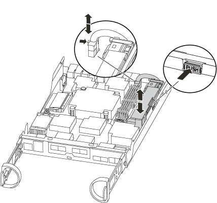
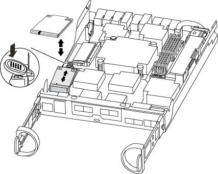
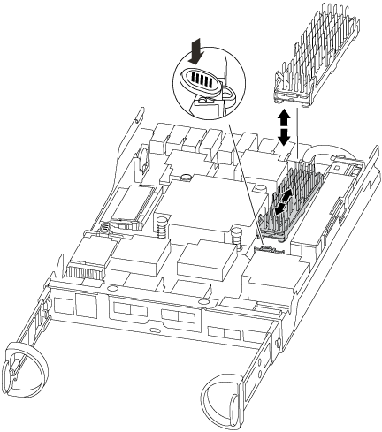

更换控制器模块硬件— AFF A220 和 FAS2700
提供者
要更换控制器模块硬件，您必须卸下受损节点，将 FRU 组件移至更换用的控制器模块，在机箱中安装更换用的控制器模块，然后将系统启动至维护模式。
第 1 步：卸下控制器模块
要更换控制器模块，必须先从机箱中卸下旧控制器模块。
-
如果您尚未接地，请正确接地。
-
松开将缆线绑在缆线管理设备上的钩环带，然后从控制器模块上拔下系统缆线和 SFP （如果需要），并跟踪缆线的连接位置。
将缆线留在缆线管理设备中，以便在重新安装缆线管理设备时，缆线排列有序。
-
从控制器模块的左右两侧卸下缆线管理设备并将其放在一旁。

-
如果您在拔下缆线后将 SFP 模块留在系统中，请将其移至新控制器模块。
-
按压凸轮把手上的闩锁，直到其释放为止，完全打开凸轮把手以从中板释放控制器模块，然后用两只手将控制器模块拉出机箱。

-
将控制器模块翻转，将其放在平稳的表面上。
-
滑动蓝色卡舌以释放盖板，然后向上翻盖并打开，从而打开盖板。

第 2 步：移动 NVMEM 电池
要将 NVMEM 电池从旧控制器模块移至新控制器模块，您必须执行一系列特定步骤。
-
检查 NVMEM LED ：
-
如果您的系统采用 HA 配置，请转至下一步。
-
如果您的系统采用独立配置，请完全关闭控制器模块，然后检查 NV 图标标识的 NVRAM LED 。


在暂停系统时， NVRAM LED 会闪烁，同时将内容存入闪存。目标值完成后，此 LED 将熄灭。 -
如果在未完全关闭的情况下断电， NVMEM LED 将闪烁，直到目标完成，然后 LED 将熄灭。
-
如果 LED 亮起且电源打开，则未写入的数据将存储在 NVMEM 上。
此问题通常发生在 ONTAP 成功启动后不受控制的关闭期间。
-
-
-
在控制器模块中找到 NVMEM 电池。

-
找到电池插头，然后挤压电池插头正面的夹子，将插头从插槽中释放，然后从插槽中拔下电池缆线。
-
抓住电池并按下标记为推送的蓝色锁定卡舌，然后将电池从电池架和控制器模块中提出。
-
将电池移至更换用的控制器模块。
-
将电池缆线绕过电池托架侧面的缆线通道。
-
将电池组的电池固定器键槽与金属板侧墙上的 "`V` " 槽口对齐，以定位电池组。
-
沿着金属板侧墙向下滑动电池组，直到侧墙上的支撑卡舌扣入电池组上的插槽，电池组闩锁扣入并卡入到侧墙的开口中。
第 3 步：移动启动介质
您必须找到启动介质并按照说明将其从旧控制器模块中取出并将其插入新控制器模块中。
-
使用下图或控制器模块上的 FRU 映射找到启动介质：

-
按启动介质外壳上的蓝色按钮，将启动介质从其外壳中释放，然后将其竖直拉出启动介质插槽。
请勿将启动介质竖直向上扭曲或拉，因为这样可能会损坏插槽或启动介质。 -
将启动介质移至新控制器模块，将启动介质的边缘与插槽外壳对齐，然后将其轻轻推入插槽。
-
检查启动介质，确保其完全固定在插槽中。
如有必要，请取出启动介质并将其重新插入插槽。
-
向下推启动介质以接合启动介质外壳上的锁定按钮。
第 4 步：移动 DIMM
要移动 DIMM ，您必须按照说明找到 DIMM ，并将其从旧控制器模块移至更换用的控制器模块。
您必须准备好新的控制器模块，以便可以将 DIMM 直接从受损的控制器模块移至更换用的控制器模块中的相应插槽。
-
找到控制器模块上的 DIMM 。
-
记下插槽中 DIMM 的方向，以便可以按正确的方向将 DIMM 插入更换用的控制器模块中。
-
缓慢推动 DIMM 两侧的两个 DIMM 弹出卡舌，将 DIMM 从插槽中弹出，然后将 DIMM 滑出插槽。
小心握住 DIMM 的边缘，以避免对 DIMM 电路板上的组件施加压力。 系统 DIMM 的数量和位置取决于系统型号。
下图显示了系统 DIMM 的位置：

-
重复上述步骤，根据需要删除其他 DIMM 。
-
验证 NVMEM 电池是否未插入新控制器模块。
-
找到要安装 DIMM 的插槽。
-
确保连接器上的 DIMM 弹出器卡舌处于打开位置，然后将 DIMM 垂直插入插槽。
DIMM 紧紧固定在插槽中，但应很容易插入。如果没有，请将 DIMM 与插槽重新对齐并重新插入。
目视检查 DIMM ，确认其均匀对齐并完全插入插槽。 -
对其余 DIMM 重复上述步骤。
-
找到 NVMEM 电池插头插槽，然后挤压电池缆线插头正面的夹子，将其插入插槽中。
确保插头锁定在控制器模块上。
第 5 步：移动存在的缓存模块
如果您的 AFF A220 或 FAS2700 系统具有缓存模块，则需要将缓存模块从旧控制器模块移至更换用的控制器模块。缓存模块在控制器模块标签上称为 M …… 2 PCIe 卡 。
您必须准备好新控制器模块，以便可以将缓存模块直接从旧控制器模块移至新控制器模块中的相应插槽。存储系统中的所有其他组件必须正常运行；否则，您必须联系技术支持。
-
找到控制器模块背面的缓存模块并将其卸下。
-
按释放卡舌。
-
卸下散热器。

-
-
将缓存模块竖直从外壳中轻轻拉出。
-
将缓存模块移至新控制器模块，然后将缓存模块的边缘与插槽外壳对齐，然后将其轻轻推入插槽。
-
验证缓存模块是否已完全固定在插槽中。
如有必要，请卸下缓存模块并将其重新插入插槽。
-
重新拔插并向下推散热器，以接合缓存模块外壳上的锁定按钮。
-
根据需要关闭控制器模块盖板。
第 6 步：安装控制器
将旧控制器模块中的组件安装到新控制器模块中后，必须将新控制器模块安装到系统机箱中并启动操作系统。
对于在同一机箱中具有两个控制器模块的 HA 对，安装控制器模块的顺序尤为重要，因为一旦将其完全装入机箱，它就会尝试重新启动。
|
|
系统可能会在启动时更新系统固件。请勿中止此过程。操作步骤要求您中断启动过程，您通常可以在系统提示时随时中断启动过程。但是，如果系统在启动时更新了系统固件，则必须等到更新完成后再中断启动过程。 |
-
如果您尚未接地，请正确接地。
-
如果您尚未更换控制器模块上的外盖，请进行更换。
-
将控制器模块的末端与机箱中的开口对齐，然后将控制器模块轻轻推入系统的一半。
请勿将控制器模块完全插入机箱中，除非系统指示您这样做。 -
仅为管理和控制台端口布线，以便您可以访问系统以执行以下各节中的任务。
您将在此操作步骤中稍后将其余缆线连接到控制器模块。 -
完成控制器模块的重新安装：
如果您的系统位于 … 然后执行以下步骤 … HA 对
控制器模块一旦完全固定在机箱中，就会开始启动。准备中断启动过程。
-
在凸轮把手处于打开位置的情况下，用力推入控制器模块，直到它与中板并完全就位，然后将凸轮把手合上到锁定位置。
将控制器模块滑入机箱时，请勿用力过大，否则可能会损坏连接器。 控制器一旦固定在机箱中，就会开始启动。
-
如果尚未重新安装缆线管理设备，请重新安装该设备。
-
使用钩环带将缆线绑定到缆线管理设备。
-
确定正确的时间后，中断启动过程 * 仅 * ：
您必须查找自动固件更新控制台消息。如果出现更新消息，请在看到确认更新已完成的消息之前，不要按
Ctrl-C以中断启动过程。当您看到消息
Press Ctrl-C for Boot Menu时，请仅按Ctrl-C。
如果固件更新中止，则启动过程将退出加载程序提示符。您必须运行 update_flash 命令，然后按 Ctrl-C退出加载程序并启动到维护模式。如果看到正在启动自动启动，请按 Ctrl-C 中止。如果您未看到此提示，而控制器模块启动到 ONTAP ，请输入
halt，然后在 LOADER 提示符处输入boot_ontap，并在出现提示时按Ctrl-C，然后启动到维护模式。 -
从显示的菜单中选择启动至维护模式的选项。
一种独立配置
-
在凸轮把手处于打开位置的情况下，用力推入控制器模块，直到它与中板并完全就位，然后将凸轮把手合上到锁定位置。
将控制器模块滑入机箱时，请勿用力过大，以免损坏连接器。 -
如果尚未重新安装缆线管理设备，请重新安装该设备。
-
使用钩环带将缆线绑定到缆线管理设备。
-
将电源线重新连接到电源和电源，然后打开电源以启动启动过程。
-
确定正确的时间后，中断启动过程 * 仅 * ：
您必须查找自动固件更新控制台消息。如果出现更新消息，请在看到确认更新已完成的消息之前，不要按
Ctrl-C以中断启动过程。在看到
Press Ctrl-C for Boot Menu消息后，请仅按Ctrl-C。
如果固件更新中止，则启动过程将退出加载程序提示符。您必须运行 update_flash 命令，然后按 Ctrl-C退出加载程序并启动到维护模式。如果看到正在启动自动启动，请按 Ctrl-C 中止。如果您未看到此提示，而控制器模块启动到 ONTAP ，请输入
halt，然后在 LOADER 提示符处输入boot_ontap，并在出现提示时按Ctrl-C，然后启动到维护模式。 -
从启动菜单中，选择维护模式选项。
-
重要信息： * 在启动过程中，您可能会看到以下提示：
-
系统 ID 不匹配的提示警告，并要求覆盖系统 ID 。
-
一条提示，警告您在 HA 配置中进入维护模式时必须确保运行正常的节点保持关闭状态。您可以安全地对这些提示回答
y。
-
-
 请求文档变更
请求文档变更 在 GitHub 上编辑
在 GitHub 上编辑 提供者指南
提供者指南